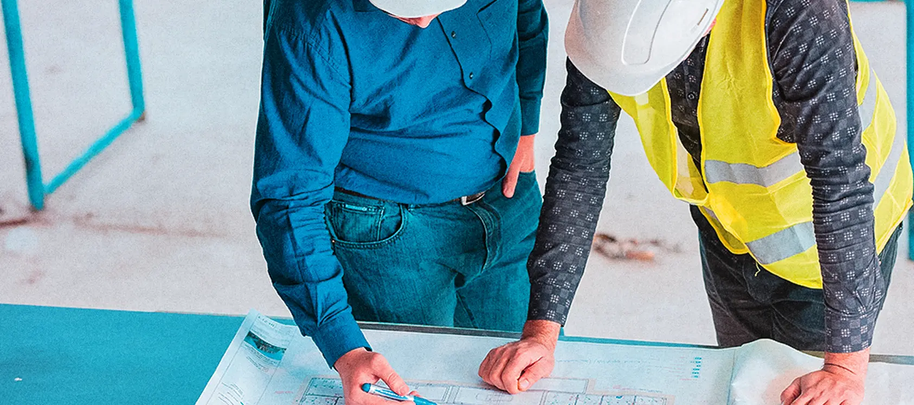

Проектирование ОС
Разрабатываем проектную документацию в соответствии с Постановлением Правительства РФ № 87 от 16.02. 2008 г. «О составе разделов проектной документации и требованиях к их содержанию».
Разрабатываем проектную документацию в соответствии с Постановлением Правительства РФ № 87 от 16.02. 2008 г. «О составе разделов проектной документации и требованиях к их содержанию».
Производим полный комплекс строительных работ, монтаж технологического оборудования и пусконаладочные работы
Подготовка всей необходимой документации для соблюдения экологического законодательства.
Решение должно оформляться любым предприятием, которое планирует
использование водных ресурсов природного происхождения или
водохранилищ. Решение могут получить частные или юридические лица
и может предусматривать индивидуальное или совместное
пользование водным объектом.
Также предусматривается возврат воды обратно в водоём после
использования, если это технически возможно.
Для выработки решения, гарантирующего достижение требуемых параметров очищенных сточных вод выполняются следующие работы:
Оказываем техническое сопровождение, разработку полного пакета экологической документации при строительстве, реконструкции и вводе в эксплуатацию очистных сооружений, в т.ч.:
Выполняем широкий спектр функций Генерального проектировщика по организации проектирования очистных сооружений, в том числе:

Основные функции генерального подрядчика по организации строительства очистных сооружений:
Услуги по реконструкции очистных сооружений включают в себя:
Полный комплекс работ по подготовке, проведению тестовых испытаний и комплексного опробования технологического оборудования. Гарантия безопасной и стабильной эксплуатации систем и оборудования в дальнейшем.